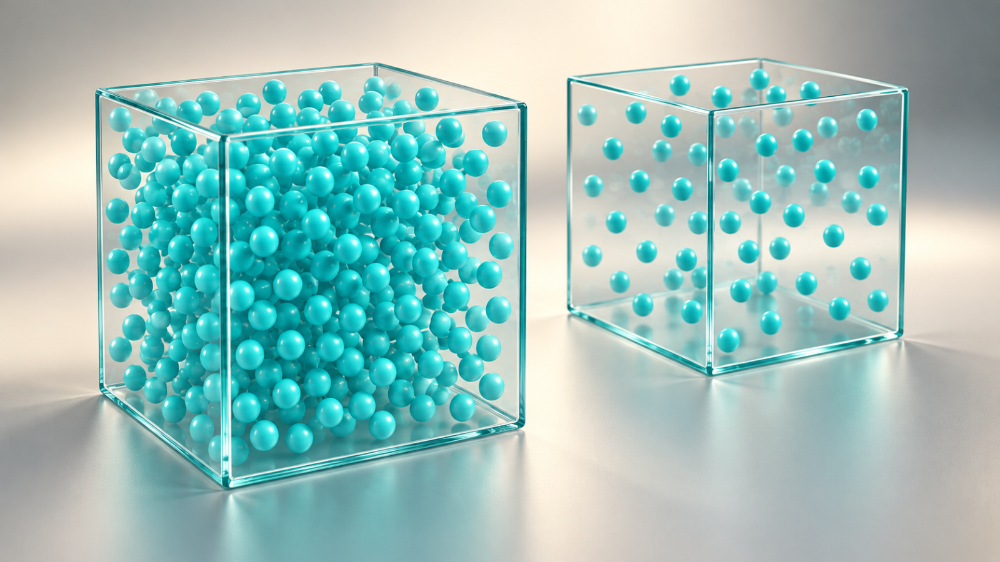
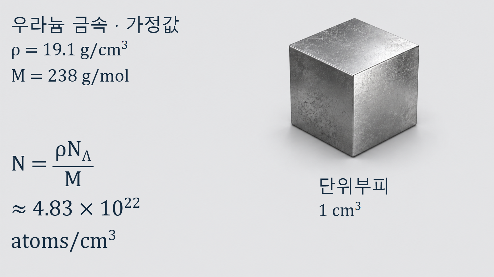
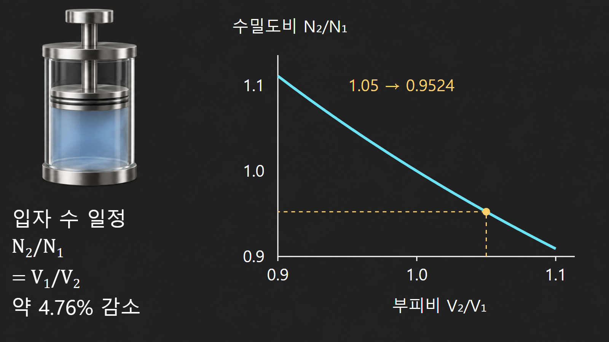

원자와 원자핵의 기초 · 008
원자수밀도
단위부피 안의 표적 원자 수

원자수밀도 N은 단위부피에 포함된 원자 또는 특정 핵종의 개수입니다. [1] 질량밀도만으로는 반응 표적 수를 알 수 없으므로 몰질량, 화학식, 동위원소 조성과 운전상태를 함께 사용해야 합니다.
질량밀도와 원자수밀도의 차이
질량밀도 ρ는 단위부피의 질량을 g/cm3로 나타내지만, 원자수밀도 N은 atoms/cm3 또는 nuclei/cm3로 나타냅니다. 같은 질량밀도라도 원자가 가벼우면 같은 부피에 더 많은 원자가 들어갈 수 있습니다. 중성자는 재료의 총질량이 아니라 경로에 놓인 개별 원자핵과 반응하므로 수송·노심해석에서는 핵종별 원자수밀도가 직접적인 입력값이 됩니다.
단일 원소의 기본 계산
단일 원소에서는 N=ρNA/M을 사용합니다. ρ/M의 단위는 mol/cm3이고 여기에 NA를 곱하면 atoms/cm3가 남습니다. 밀도 19.1 g/cm3, 몰질량 238 g/mol인 우라늄 금속을 단순 가정하면 N≈4.83×1022 atoms/cm3입니다. 단위 약분과 10의 지수를 함께 적으면 kg–g, m3–cm3 변환 오류를 찾기 쉽습니다.

화합물 UO₂의 성분별 계산
화합물에서는 먼저 UO₂ 화학식 단위의 수밀도를 구하고 원자 배수를 적용합니다. 화학식 단위 수밀도가 X라면 우라늄 원자수밀도는 X, 산소 원자수밀도는 2X입니다. 농축 연료에서는 우라늄 수밀도를 다시 U-234, U-235와 U-238의 원자분율에 따라 나눕니다. 제조자료가 질량분율을 제공하면 동위원소별 몰질량을 이용해 원자분율로 변환해야 하며, 두 분율을 그대로 같다고 두어서는 안 됩니다.
| 입력 | 반영 방법 | 누락 시 영향 |
|---|---|---|
| 소결체 실제 밀도 | 이론밀도 대비 기공 반영 | 모든 핵종 수밀도 과대평가 |
| UO₂ 화학양론 | U 1개, O 2개 적용 | 산소 수밀도 오류 |
| 동위원소 조성 | 원자분율로 핵종별 분배 | 핵분열·흡수율 오류 |
물 1 cm³의 수소와 산소 수밀도
물의 밀도를 1.00 g/cm3, 몰질량을 18.015 g/mol로 두면 분자수밀도는 약 3.34×1022 molecules/cm3입니다. 따라서 수소 원자수밀도는 약 6.69×1022 atoms/cm3, 산소는 약 3.34×1022 atoms/cm3입니다. 감속재 해석에서는 분자 수가 아니라 수소와 산소의 핵종별 수밀도와 각 반응단면적을 사용합니다.
열팽창이 수밀도에 미치는 영향
원자 수가 보존된 채 부피가 5% 증가하면 N₂=N₁V₁/V₂=N₁/1.05≈0.952N₁이므로 수밀도는 약 4.8% 감소합니다. 미시적 단면적 σ와 중성자속 φ가 같다는 분리 조건에서는 반응률 R=Nσφ도 같은 비율로 감소합니다. 실제 원자로에서는 온도 변화가 중성자 에너지분포와 단면적에도 영향을 주므로 이 계산은 밀도 효과만 이해하기 위한 첫 단계입니다.

미시적 단면적과 거시적 단면적
미시적 단면적 σ는 원자핵 하나의 반응 가능성을 면적 단위로 나타냅니다. 거시적 단면적 Σ=Nσ는 재료를 단위길이 통과할 때의 반응 가능성과 연결되며 단위는 cm−1입니다. 혼합물에서는 핵종별 Σi=Niσi를 더합니다. 따라서 동일한 재료명이라도 밀도, 온도, 기공률과 동위원소 조성이 달라지면 거시적 반응특성이 달라집니다.
입력자료와 결과의 검산
재료의 온도·압력 상태, 실제 밀도, 화학식과 동위원소 조성을 먼저 고정합니다. 이어서 모든 질량분율 또는 원자분율의 합이 1인지 확인하고 핵종별 수밀도를 계산합니다. 응축물질의 결과가 대체로 1022~1023 atoms/cm3 규모인지 비교합니다. 범위를 크게 벗어나면 단위 변환, 화학식 배수, 농축도 기준과 기공률을 우선 점검합니다.
핵심 정리
원자수밀도는 재료의 거시적 질량과 부피 정보를 핵반응 표적 수로 변환하는 값입니다. 밀도·몰질량·화학양론·동위원소 조성·운전온도를 일관되게 적용해야 노심 및 방사선수송 계산의 출발값을 신뢰할 수 있습니다.